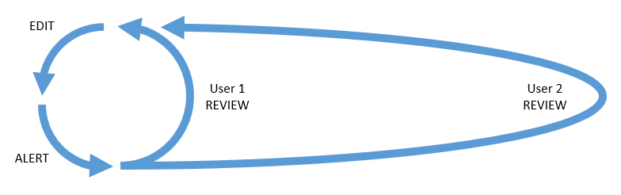

The EVA Wiki
improved knowledge management
James Montalvo - Scott Wray - Daren Welsh
Costa Mavridis - Stephanie Johnston - Brian Alpert
(Use arrow keys to navigate)
The word "wiki"
What is the EVA Wiki?
the most reliable knowledge management system in existence.
Accountability
- The EDIT-ALERT-REVIEW loop
- Accountability analytics
Edit - Alert - Review Loop

- Systems provides method to edit content
- When edits are made the system sends an alert
- Users review changes
Alerts
- Pending Reviews
Quick Pending Reviews Demo
Page views with pages in bins of 50

Number of page reviews

Full Pending Reviews Demo
Edit - Alert - Review Loop
Edit - Alert - Revieeeeeeeeeeeew Loop

Blocked Loop

One user with a long review time blocks other users from further edits
The Wiki Way
- Users don't have to wait for other reviewers
- When delayed reviewers come back . . . easily review sum of all changes
Accountability
- The edit-alert-review loop
- Accountability analytics
Accountability Analytics
Quantifying how well a page has been reviewed:
- number of reviewers
-
trust in individual reviewers
- reviewer's organization
- certifications
- activity on wiki
- how others rate their contributions
Watch Suggestions Demo
Watch Suggestions: Real Conversation
Disclaimer: the names are fake and the words are paraphrased, but the conversation is real.
The other day Amy and Bob were heckling each other about who was watching more pages.
- Amy: "I'm watching almost as many pages as our group lead...I'm going to get more than her!"
- Bob: "It just seems to randomly suggest pages to me, though. Why would I care about OCAD 12345?"
- Amy: "Well, that OCAD page is about your hardware."
- Bob: "Oh, well maybe I do want to watch that!"
How has Watch Suggestions helped?

Other Data Collected
How well are we watching pages?

How well are we doing with reviewers?

This is how it looked a year ago!

Comparing Timeliness of Reviewers

What pages users go to

Analytics Summary
The EVA Wiki is able to automatically analyze its own state and provide suggestions to the user to help them work most efficiently.
Reliability
- How can we make sure data isn't lost?
- How can we make sure critical data is reviewed before being publicly available?
More Demos
- Fixing Vandalism
- Approved Revs
Other Topics
- How we minimize duplication to eliminate conflicting sources
-
How we integrate with external databases
- Imagery Online, IMS, Certifications, Drawings, CMC Imagery
- In the future: Flight Notes, Flight Rules, Chits, Anomalies…
-
How we integrate between wikis
- All-FOD Wiki, EVA, ROBO, TOPO, Mission Systems
- Several other groups interested and requesting wikis